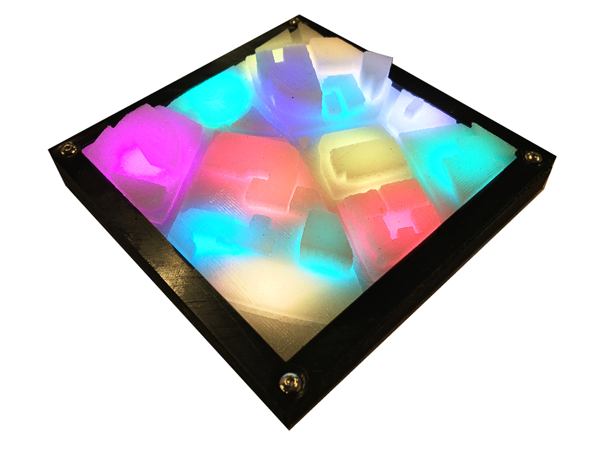Light as Material
Computational Design and Fabrication for Illumination Aesthetics.
CHI '17
Overview
Light as Material is a project that probes the use of light as an interactive medium.
I worked on this project with Cesar Torres and Molly Nicholas in the Hybrid Ecologies
Lab lead by Professor Eric Paulos.
In the paper, we introduce a design tool that translates a user's drawings into printable
parts for constructing a custom luminaire. The tool allows users to experiment with different
designs and LED colors and placement, and a specialized ray tracer allows the user to
vizualize the result in real-time.
My role in the project was assisting in building the front-end and back-end tools,
handling the fabrication of custom lenses, finding the optimal means of mixing
silicone light diffusers, and creating a use case for the tool, described below.
Please find the full paper (not for distribution) attached in the linked folder.
Computational Tool
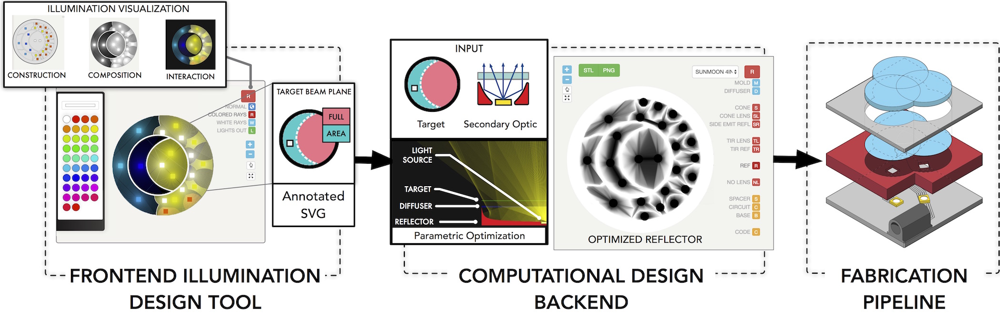
The tool uses the paper.js vector graphics scripting framework which enables common
vector editing operations and backwards compatibility with vector graphics applications.
In order to carry over tool-specific data (e.g. annotating vector elements that
corresponded to LEDs), we overwrote the SVG data attribute with a JSON string.
From an initial SVG design, the tool allows the user to specify two types of
elements: elements which block light (hard edge), and elements which allowed light to
pass through (soft edge).
At a high level, the design tool allows users a single operation: place, remove,
and move LED elements in a scene. Otherwise, all interactions with the design
take place in an external vector graphics editor in order to leverage user’s
knowledge of and expertise with existing graphic design tools.
In order to support the luminaire design tool, we built a computational
design backend for constructing a secondary optics system, or the design
of fixtures and elements that alter the distribution of luminous intensity
from the light source. Such distributions can diffuse, redirect, or focus
light. For instance, a collimating optic on a bike light redirects light
rays such that they become parallel to each other, increasing the light’s
viewability from a distance and maximizing the lumens over a given area
of focus - like the pavement in front of the bike. Our work explores the
creation of secondary optics to diffuse light over an area.
Fabrication
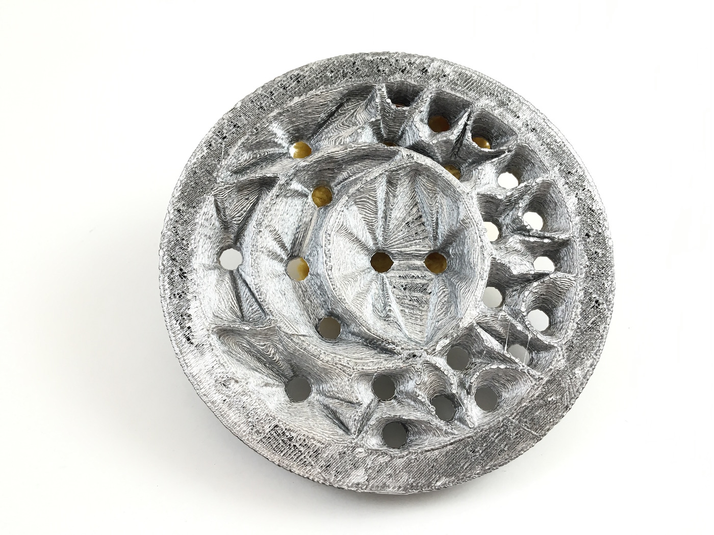
One of the most powerful and useful parts of our system is that it automatically generates all of the necessary files to construct the final luminaire. From the user’s perspective, once they have finalized their design, the tool outputs five files 1) the 3D enclosure model, 2) a model to cast or print a diffuser, 3) a 3D reflector model, 4) a PCB board design file, and 5) microcontroller code to control the final LED assembly.
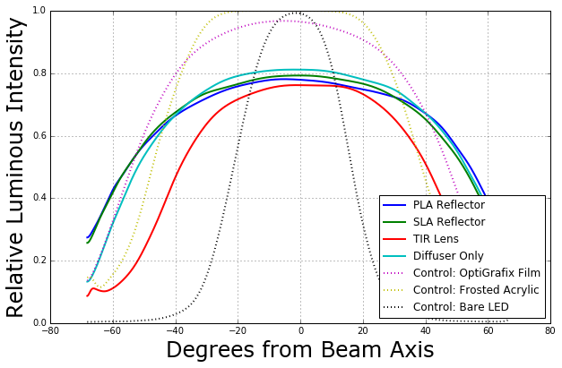
I validated the effectiveness of out components with empirical testing. The graph above
shoes the luminous intensity curves of LEDs outfitted with several diffuser types. To obtain the
graph, I photographed all different diffusers over an LED, cleaned and applied filters to the
resulting images, extracted profile curves from pixel values, applied Gaussian smoothing
and plotted them. We see that the components outperform the controls in producing smooth
distributions of light.
Use Case: Harvard Square Model
As an example of what a custom interactive light display could be, I set out
to make a luminaire of Harvard Square in Cambridge, MA, starting with a drawing
of the city plan.
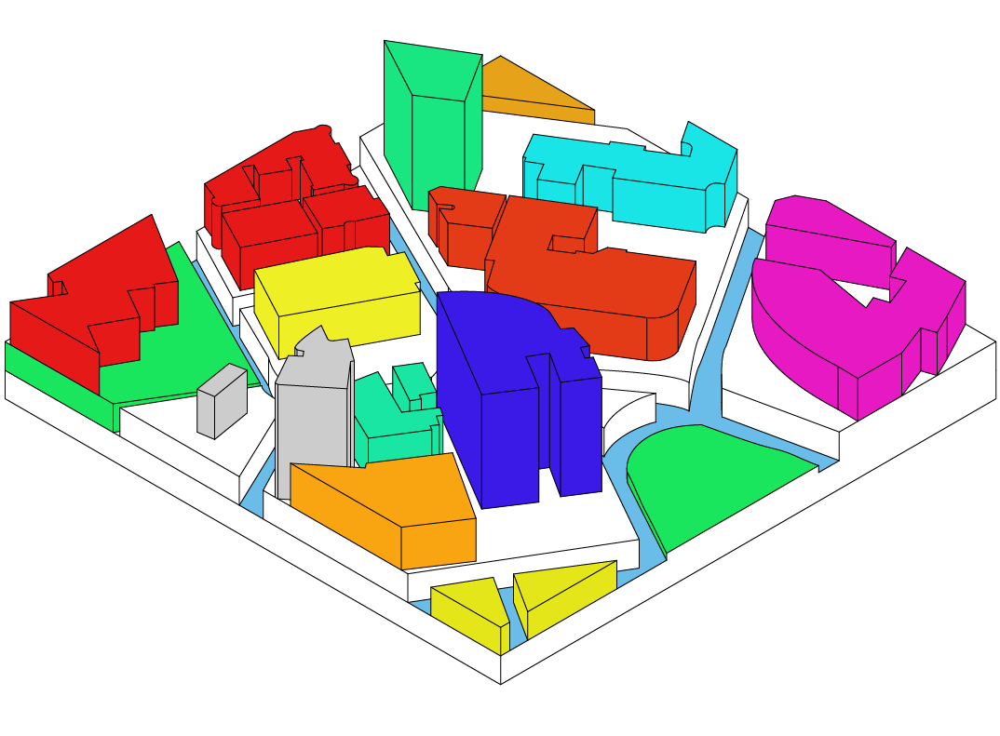
In the program, we placed the LEDs strategically to illuminate the buildings.
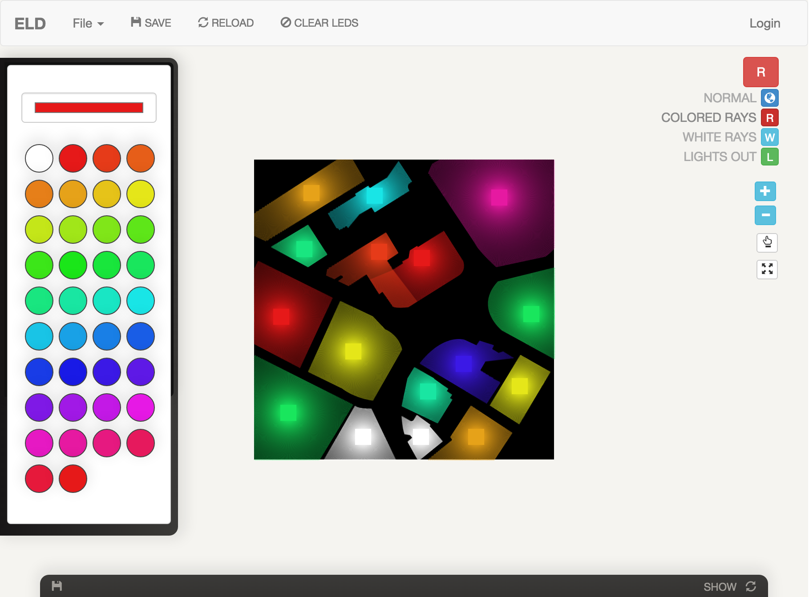
I first did a minature test print of the volumetric diffuser out of clear SLA.
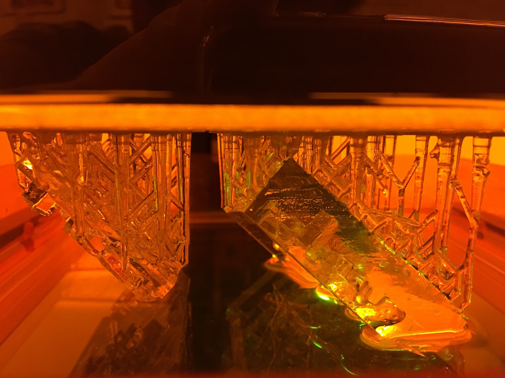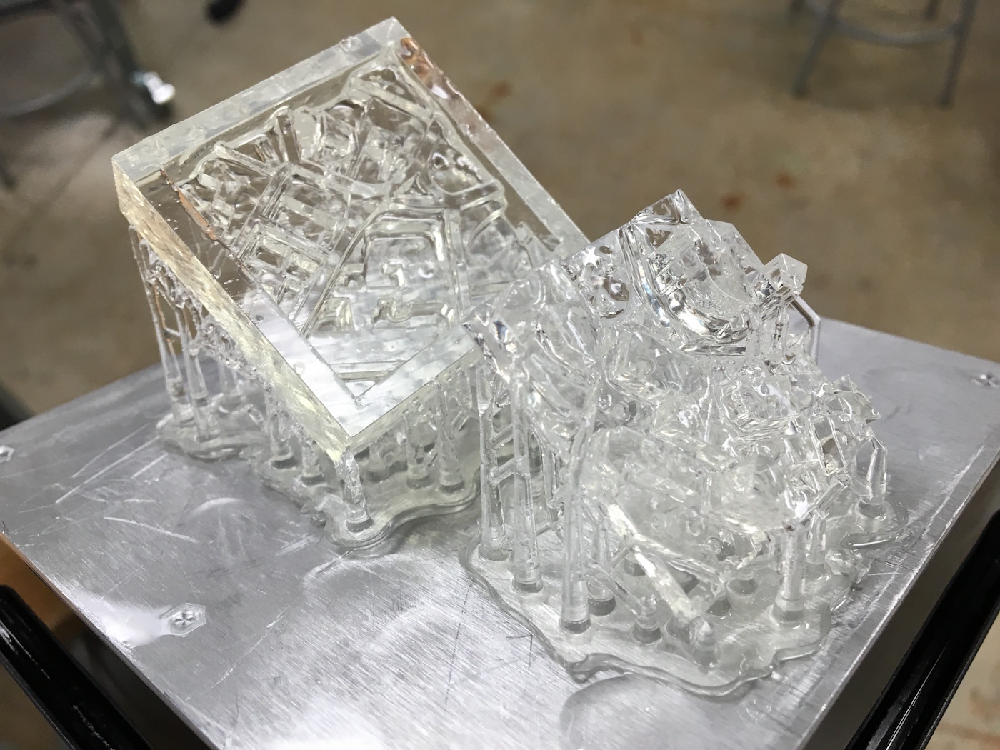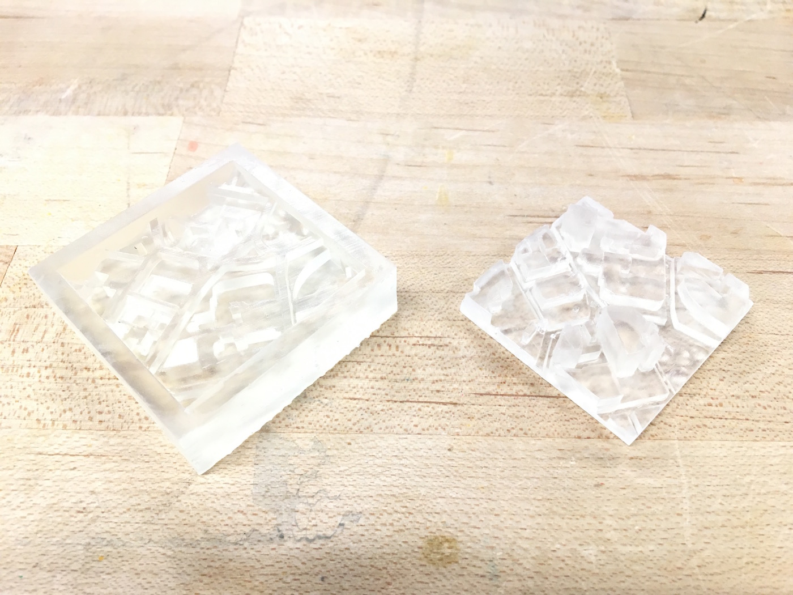
Satisfied with the results, I printed a full-scale mold to fill with the empirically
determined silicone mixture to best difuse the light.
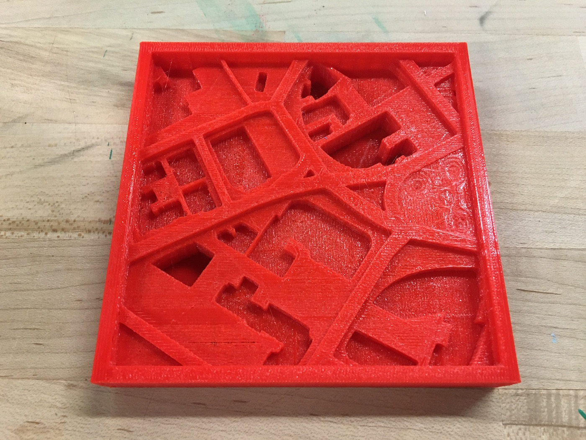
The final luminaire:
User Studies and Results
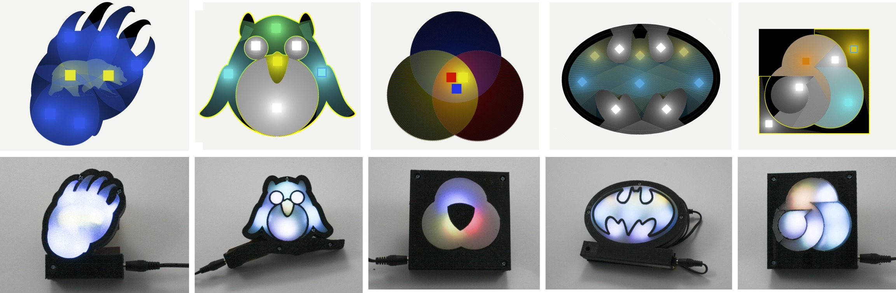
We invited participants to design their own luminaires. The main goal of the user
study was to obtain qualitative feedback on how the design tool facilitated luminaire
design. We were especially interested in understanding a user’s mental model of light,
and what new functions and aesthetic choices this new understanding would afford.
Even in a brief workshop-style experience, with minimal experience with the tool
and only an introduction to this novel way of working with light, users readily
generated unique light interactions. A shift in vocabulary reflected this new understanding
of the various aesthetic uses of light. We found that simulated light beams afforded deeper
and more novel explorations of light.